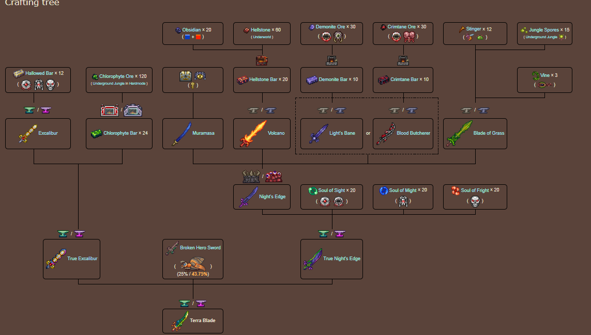

ARMAS TIERLIST
PAGINA PRINCIPAL|ACCESORIOS TIER LIST|ARMAS TIER LIST
En este apartado de la pagina hablaremos sobre una tierlist de Armas desde rango S a rango F, siendo S el superior; yo siendo un jugador experimentado, creo esta lista para nuevos jugadores que quieren empezar en terraria y no saben muy bien como equiparse bien o que armas son buenas, este juego es muy Amplio y complejo en lo que a acessorios y armas se basa, no es un juego que de buenas a primeras puedas obtener o aprender todas las cosas.
Hablaremos sobre la tier S de nuestra tierlist de armas, para jugadores experimentados reconoceran bastante de las armas que estan en tier S como la Mewmare o el terraprism, quise enfocar esta tierlist en armas que son muy buenas sin importer mucho tus habilidades o la experiencia de juego, estas armas siempre van a ser buenas en la mayoria de casos.
Vamos a poner las armas mas destacadas, Primeramente temenos los yoyos, los cuales en terraria y para clases de melee soy lo major en mi opinion porque te dan distancia de ataque aun usando los atributos melee, estos van perdiendo utilidad mas Adelante en la partida por que hay mas variedad de armas melee con rango como pueden ser los mayales(hablaremos mas adelante). En esta seccion tier S coloque El amazon y el amarok los cuales son extremadamente buenos para el momento en el que se consiguen, el amazon siendo con drops de la jungle que aunque sea un bioma complejo la recompenza es enorme y el amarok que con suerte te lo sueltan nada mas empezar hardmode
Ahora si siguiendo con los mayales, puse 3 mayales que son muy buenos y gracias a los mejoras estadisticas de estas armas, son inegablemente Fuertes, el primero y mas facil de conseguir seria Dao of Pow el cual aunque cuesta un poquito de conseguir (osea no lo puedes conseguir apenas entras en hardmode)tiene un daño absurdamente fuerte, continuando con el mayal floral, lo mas destacable es su daño y los petalos autodirijidos cuando se mantiene el click, por ultimo y aunque la pesca sea aburrida esta arma hace que valga la pena.
por ultimo vamos a hablar de las espadas y como no, vamos a hablar del arma mas famosa de terraria, la TERRABLADE, el cual tiene un arbol de materiales gigantesco pero el obtenerla y el poder que tiene hace satisfactoria la busqueda, teniendo en consideracion Tambien el filo de la noche que es lo mismo que la terrablade para pre-hardmode y esta siendo un ingredient de creacion. Como el tema son buenas espadas Podemos añadir por ultimo a la furia estelar la cual es un arma que te lleva en el carro por la mitad del pre-hardmode y se puede optener solamente llendo a las islas flotantes.
 si este creacion es extensa y se requiere de buscar los materiales, pero esta es una "side-quest" de la que no te vas a arrepentir